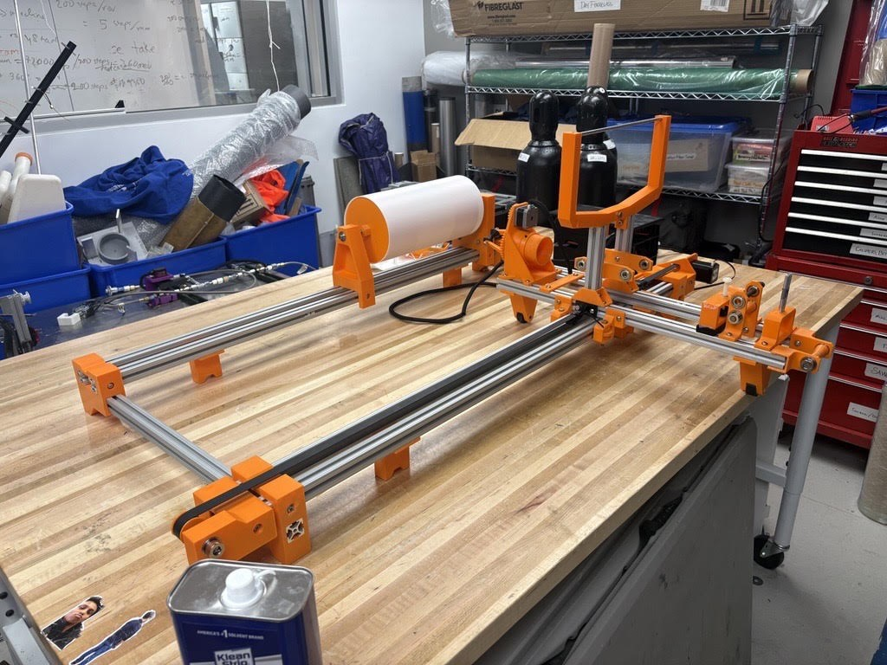
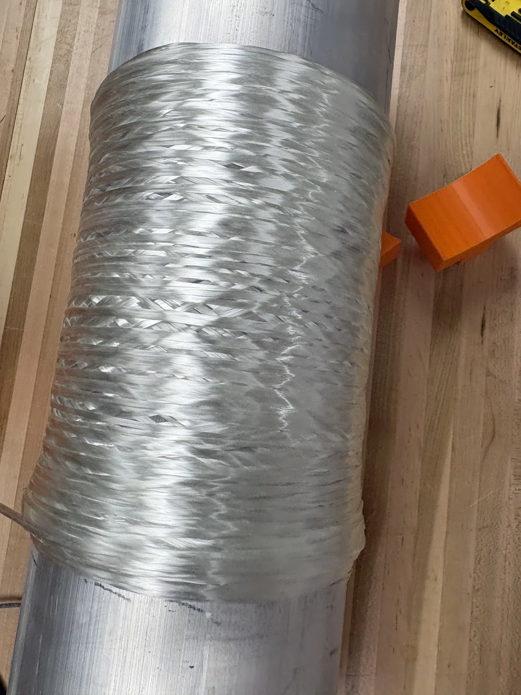
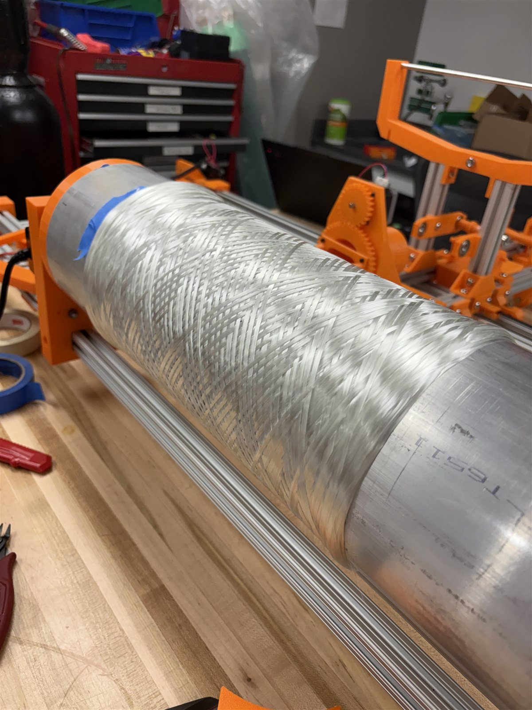
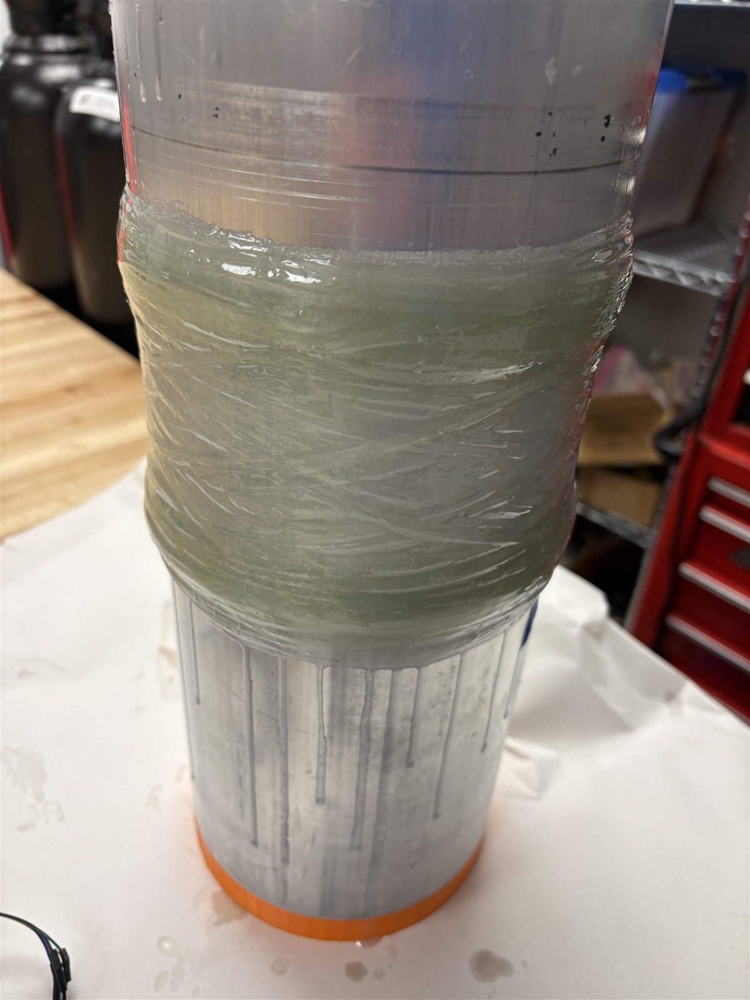
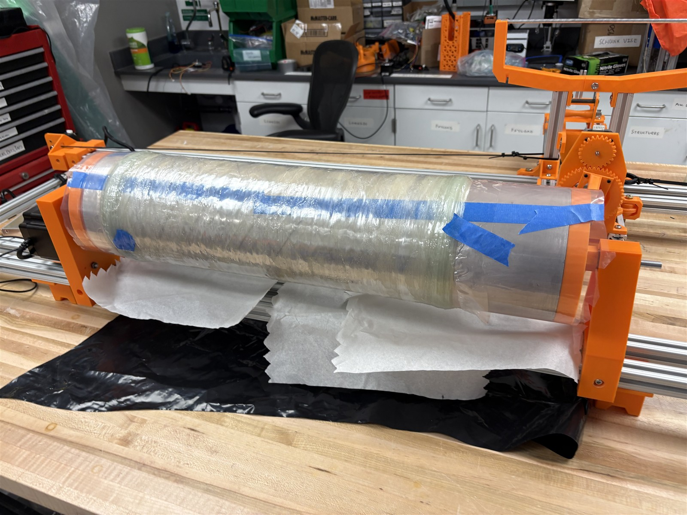

Filament Winder
Future Fiberglass & Carbon Flight Tubes

My Role
As Structures Lead, I'm bringing online the team's first ever filament winder for future fiberglass and carbon flight tubes.
I ran a complete test wind in October 2026. The team is replacing the motor and gear system as testing continues. We're aiming for faster, cheaper, potentially stronger tubes than hand layup.
- Two wet winds completed
- Stress-strain characterization still pending
Dry winds


Wet winds

